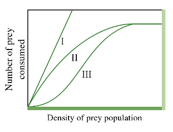

BIOS 454/854 Ecological Interactions
Modeling Exercise on Prey Clumping & Density Dependent Survival
In this modeling exercise, you will run several simulations to analyze the effect of the crowding of prey and density dependent survival on the proportion of a population of individuals surviving from one time point to the next. You will turn in your answers to the questions in this document.
Learning Goals
- To describe and interpret the population-level consequences of locally density dependent survival
- To analyze how behavioral mechanisms underlying interspecific interactions can produce density dependence
- To describe how negative and positive density dependence may be operating simultaneously to influence an ecological process in a given natural system due to different underlying ecological interactions
Background
In this modeling exercise, you will run several simulations to analyze the effect of the crowding of prey and density dependent survival on the proportion of a population of individuals surviving from one time point to the next. In this example, we will model granivorous animals, such as rodents, consuming seeds that were dispersed all at once from a mother tree. The granivorous animals can be described as optimal foragers, in that they are attracted to patches with high densities of seeds and spend of their most time consuming seeds in those areas. Seeds in low-density patches may escape predation because the prey resource is too sparse to be profitable for an optimal forager, and so the granivores do not forage there. The seeds are produced on a mother tree and are dispersed in space depending on the shape of the seed dispersal curve. As you work through the exercise, you should think about how this example would apply to other scenarios involving other predators and prey or the transmission of disease.
Questions
1. The seed dispersal curve
In our example, the seeds are dispersed from a mother tree based on a seed dispersal curve, which describes the probability (y-axis) that a seed lands at a given distance (x-axis) from the mother tree. We are imagining a two-dimensional dispersal curve (for simplicity); that is, seeds can only be dispersed to the left or to the right of the mother tree perfectly on a line (not all the way around the mother tree). In other words, we are collapsing what is normally a 3-dimensional process into a 2-dimensional one, which is commonly done in mathematical models. The mother tree is at position zero along this line. We are using the normal probability density function (a.k.a., the “bell curve”) to represent the seed dispersal curve.
The normal probability density function has two parameters that can take on various values, the mean and the standard deviation, sigma. Here, we are setting the mean to equal zero. This is because the normal distribution is symmetrical around the mean, and we want the mother tree in the center of our seed dispersal curve. The parameter sigma controls how far the seeds are dispersed from the mother tree. In our simulations, we will vary sigma and see what effects this has on the seed dispersal curve and density dependence.
Run this line of R code below and examine the graph it produces.
Note: You can copy and paste graphs into your document a few ways, but one way is to Ctrl-click or right click on the image and choose “Copy image”. You can then paste the image in your Microsoft Word document by placing the cursor where you want the image and pressing Ctrl-V (or Command-V on a Mac).
You can change the values of sigma that are plotted by changing the numbers inside the c() in the line of R code above, keeping the separation of each number by a comma. Pick some different values of sigma to graph - Do the seed dispersal curves change in the expected way?
Example interactive
TipQuestion 1
Interpret this graph in terms of ecology – where is the mother tree? What does the x-axis represent? What do the different curves represent? What effect does varying sigma have on the shape of the seed dispersal curve? Imagine that there are 1000 seeds dispersed according to this seed dispersal curve. Describe where, relative to the mother tree, most of the seeds will land if sigma is small versus large. Predict how you think the densities of these seeds (seeds per unit “area”, that is, seed crowding or clumping) will change when sigma is low versus high.
2. Variation in seed crowding
Let us check our predictions about how the seed densities vary depending on the value of sigma in the seed dispersal curve. Imagine that 1000 seeds are dispersed according to the seed dispersal curves above, which have different values of sigma. The seeds are binned in patches that are 2 units long, and we count up the number of seeds in each patch as a measure of the seed density in that patch. We want to know how crowded the seeds will be in a patch depending on the shape of the seed dispersal curve.
The function in the line of R code below does this. Run this line of R code, and examine the graphs that it produces.
TipQuestion 2
What do these results imply about the relationship between the shape of the seed dispersal curve and the consequences for the spatial pattern of seed distribution on the ground? Was your answer to question #1 correct or incorrect regarding the effect of varying sigma of the seed dispersal curve on the seed crowding?
3. The effect of density dependence
The granivores in our example are assumed to forage somewhat optimally, so the granivore population density is proportional to the seed density in a patch. That is, there are twice as many granivores in a patch with twice as many seeds. This is reasonable because it is known that many kinds of predators are attracted to patches with high prey density. As the granivores forage, the seed density in a patch declines. A truly optimal forager would move to a new, better patch when the seed density of a patch fell below a critical value (often called the “giving up density” in theoretical ecology), but our simple model does not allow the granivores to move as seed densities in a patch change. A more realistic model would adjust the granivore population distribution to maintain the assumption that the granivore population density is proportional to the seed density in a patch over time, analogous to what is called the “ideal free distribution” in theoretical ecology. However, for us it is fine to work with this simpler model.
Our model is a Holling type II model, which is a type of functional response curve depicting how the intake rate of a consumer varies as a function of food density (Figure 1). The Holling type II model is an increasing, concave down function that reaches an asymptote at higher prey densities.

TipQuestion 3.1
Before reading ahead, spend some time looking at the shape of the Holling type II curve and thinking about the assumptions that this shape of curve is making about how predators forage. In other words, what do the different parts of the curve imply about what is limiting the rate of prey consumption?
Based on the Holling type II model, our model assumes that the rate \(r\) at which seeds are consumed at distance \(x\) away from the mother tree is:
\[ r(x,t) = \frac{\phi(x) * p(x,t)}{[1 + h * p(x,t)]} \]
where \(\phi(x)\) is the population density of granivores at \(x\) and \(p(x, t)\) is the current density of seeds at \(x\) at time \(t\). Time is standardized so that one unit of granivores can search one unit of space in one unit of time. The handling time, \(h\), is the amount of time required for one unit of granivores to digest one unit of seeds.
In the Holling type II model (Figure 1), at lower prey densities, the rate of consumption increases rapidly, but at a decelerating rate, until eventually at higher prey densities, the rate reaches an asymptotic consumption rate. The increasing, but decelerating, prey intake rate with increasing prey density at lower densities derives from the assumption that the consumer is limited by its capacity to process food. As a result, although the number of prey consumed still increases with density, it does so at an ever-slower rate (concave downward curve) with increasing prey density. At very high prey densities, the predators need very little time to find prey and spend almost all their time handling prey and very little time searching. The predators are then satiated, and the total number of prey killed reaches a plateau. The predators are no longer limited by the density of the prey. Instead, they are limited by the amount of time it takes to handle and consume each prey item, so they cannot eat fast enough to consume any more of the seeds.
Changing the value of \(h\) (handling time) changes the efficiency of the predator, and hence also changes the shape of the Holling type II functional response. As \(h\) increases, the efficiency of the predator declines (since \(h\) is in the denominator), and the deceleration of prey intake rate is more severe because handling time is slower (more time is needed to consume a prey item) for larger values of \(h\).
Let’s explore the effects of changing the handling time on the shape of the Holling type II functional response curve. Run the two lines of R code below and examine the graphs that it produces (paste your graph into the document).
If you would like, you can change the values of \(h\) that are plotted by changing the numbers inside the c() in the plot.Holl.T2 line of R code above, keeping the separation of each number by a comma. Pick some different values of \(h\) to graph – How does the shape of the functional response curves change?
TipQuestion 3.2
What does the shape of these functional response curves imply about the effect of handling time on the intake rate? Why is the curve for \(h = 0\) so different from the others? What type of density dependence would these functional response curves produce for seed survival? Explain the graphs in terms of the biology of the system.
4. Proportion of the total population of seeds that survives
The graphs that you produced in Question 3 show how the consumption rate of the predator changes with seed density in the patch. However, this does not tell us what will happen to the population of seeds as a whole across all of the patches, given a particular seed dispersal curve. We want to know what proportion of the total population of seeds (the cohort of offspring from a mother tree) that were dispersed across all of the patches will survive (\(S\)). We already know that the survival of an individual seed depends not only on the strength of density dependence, which depends on the handling time of the predator (\(h\)), but also on the density of seeds in a patch. We also know that the density of seeds in a patch depends on the shape of the seed dispersal curve, specifically the value of sigma. So, we need to integrate these three pieces of information so we can examine how they jointly determine the survival of the seed population. We can only do this with mathematical modeling.
First, let’s graph how \(S\) changes with sigma. Use the line of R code below to calculate \(S\) for sigma values equal to 0.1, 1, 2, 3, and 4. We will keep the value of \(h\) equal to 2 every time. You should get a single value returned by this line of code. To do this, re-run this same line of code each time, but change only the value for sigma. The number that appears on your screen will be the value of \(S\) at that sigma.
The graphs that you produced in Question 3 show how the consumption rate of the predator changes with seed density in the patch. However, this does not tell us what will happen to the population of seeds as a whole across all of the patches, given a particular seed dispersal curve. We want to know what proportion of the total population of seeds (the cohort of offspring from a mother tree) that were dispersed across all of the patches will survive (\(S\)). We already know that the survival of an individual seed depends not only on the strength of density dependence, which depends on the handling time of the predator (\(h\)), but also on the density of seeds in a patch. We also know that the density of seeds in a patch depends on the shape of the seed dispersal curve, specifically the value of sigma. So, we need to integrate these three pieces of information so we can examine how they jointly determine the survival of the seed population. We can only do this with mathematical modeling.
First, let’s graph how \(S\) changes with sigma. Use the line of R code below to calculate \(S\) for sigma values equal to 0.1, 1, 2, 3, and 4. We will keep the value of \(h\) equal to 2 every time. You should get a single value returned by this line of code. To do this, re-run this same line of code each time, but change only the value for sigma. The number that appears on your screen will be the value of \(S\) at that sigma.
Write down these values of sigma and \(S\) – there should be 5 points defined by sigma vs \(S\). In the following code block, two vectors are created: sigma.x and S.y storing the values of sigma and \(S\), respectively. Here, XX1 is the first value of sigma (from above), and YY1 is the value of \(S\) associated with that sigma, and so on for the second, third, fourth, and fifth. So, you must replace the XX and YY with the values you recorded. The final line of code displays the data using a line plot.
TipQuestion 4.1
What is your interpretation of these results? Explain why the curve is shaped the way it is. What does this curve imply about negative density dependence and the effect of the shape of the seed dispersal curve on plant population growth rates? What are the consequences of this for the evolution of seed dispersal strategies?
Second, let’s graph how \(S\) (proportion of the total population of seeds that survives) changes with \(h\) (handling time). Use the line of R code below to calculate \(S\) for \(h\) values equal to 0, 1, 2, 3, and 4, then graph them in the same way that you did above. We will keep the value of sigma equal to 1 every time. The number that appears on your screen will be the value of \(S\) at that \(h\).
TipQuestion 4.2
What is your interpretation of these results? Explain why the curve is shaped the way it is. What does this curve imply about negative density dependence and the effect of the shape of the seed dispersal curve on plant population growth rates? What are the consequences of this for the evolutionary effects of seed predators on seed morphology and chemistry?
5. The effect of variation in the shape of the seed dispersal curve and the strength of negative density dependence on the total population of seeds that survives
Now you have a feeling for how \(S\) varies due to the independent effects of sigma and \(h\), but we know that because of how crowding affects the predator’s consumption rate, the effects of \(h\) and sigma on survival are actually not independent of each other. To understand their interdependence, we need to examine Question 5.1 how \(S\) changes with respect to sigma at several values of \(h\) and Question 5.2 how \(S\) changes with respect to \(h\) at several values of sigma.
To do Question 5.1, run the following line of R code. Examine the graph it produces.
TipQuestion 5.1
What is the ecological interpretation of this family of curves?
To do Question 5.2, run the following line of R code. Examine the graph it produces.
TipQuestion 5.2
What is the ecological interpretation of these curves? Comparing the two sets of curves in 5.1 and 5.2, under what circumstances would adjustment of the seed dispersal curve vs the handling time be more likely to increase fitness of the mother tree?
6. Conclusions
TipQuestion 6.1
Think about these results as a whole, and provide an overall summary of the interactive effects of seed dispersal, seed crowding, and the behavior of seed predators on seed survival at the population level. Given the assumptions we made about how seed predators forage, what do the results imply about how natural selection would operate to maximize the proportion of all of its seeds that survive? In other words, what factors could the plant “control”? How might the predator “respond”? Is this co-evolution? Why or why not?
TipQuestion 6.2
Aside from the fact that our model does not account for the behavioral response of the seed predator to changing seed densities, as noted above, can you think of another ecological interaction that our model neglects (in other words, what other ecological interactions are ignored by our model)?